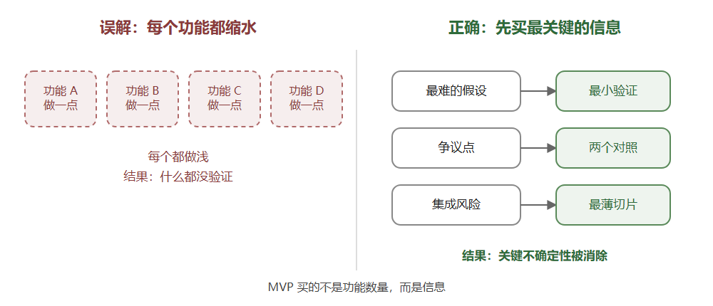
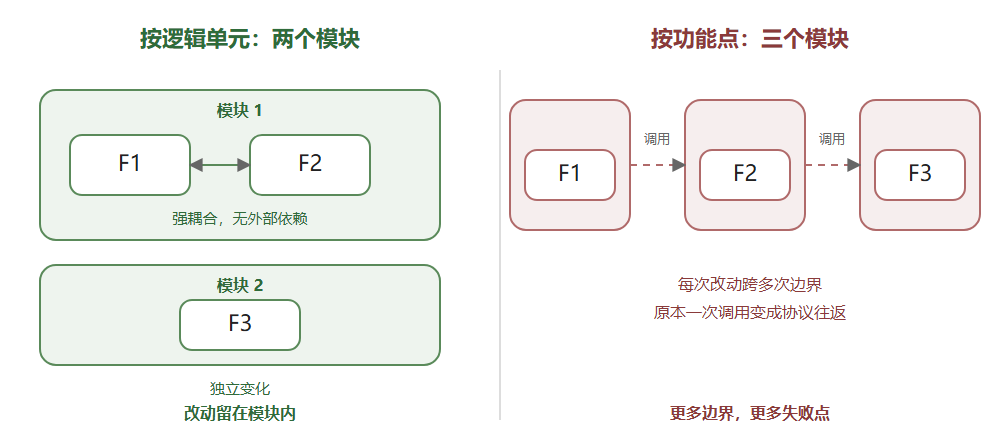
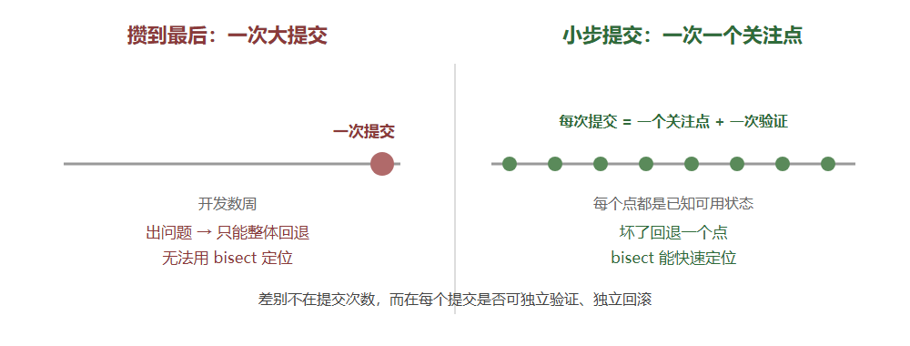
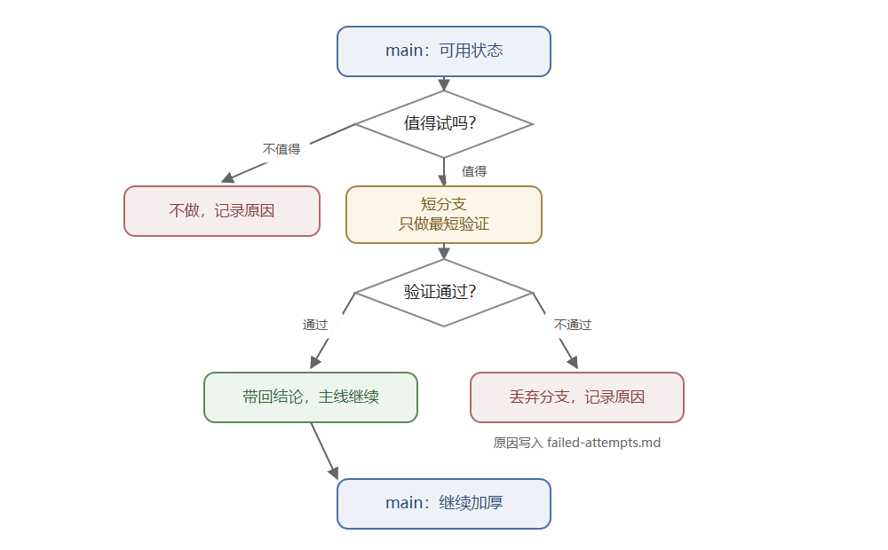

把开发做成一个可验证的系统
——我的工程方法论：四个闭环与六种成本
版本：2026-10 · 体裁：工程方法论 + 跨项目复盘 适合读者：独立开发者、技术负责人、需要与 AI 长期协作的工程师
一句话结论
高效不是单位时间写更多代码，而是降低六种成本：决策、返工、上下文、风险、协调、维护。 方法的核心只有一句：先让事情可被证明，再让它变快。
快速导读
如果你只有 3 分钟
大多数开发时间并没有花在“写代码”上，而是花在：
- 重新理解上周的自己；
- 重复踩已经踩过的坑；
- 反复讨论“到底要做成什么样”；
- 改完之后不知道有没有改坏；
- 东西越加越多，最后删不掉；
- 换个人（或换一个 AI 会话）就接不上手。
我做的事情，本质上不是“更努力地写”，而是给这六件事各建一个闭环：
- 意图闭环：先写目标、非目标、硬约束，再写代码。
- 证据闭环：先有仪器，再有结论；每个结论都能指到一份报告。
- 收束闭环：先展开，再删除；删除有判据，重构有机器证明。
- 记忆闭环：让文档、任务、变更、失败记录替我记得；下一次不必重新想。
还有一个总开关：别想太多。 想清楚到能端到端跑通的最小闭环，就做出来；剩下的用证据回答，不要用想象回答。不要把精力花在“未来可能存在”的需求上，也不要和想象中的敌人作战。
一句话：把开发当成一个可验证的系统，而不是一场靠记忆维持的连续表演。
如果你要解决具体问题
| 你正在遇到的问题 | 去哪一节 |
|---|---|
| 需求反复变，做着做着跑偏 | 3.1 |
| 改完之后不知道有没有改坏 | 3.2、3.3 |
| 同样的坑踩了第二次 | 3.2、3.4 |
| 项目越做越大，删不掉 | 3.3 |
| 换人或换 AI 会话就接不上 | 3.4 |
| 不知道该不该拆模块/服务 | 3.3 |
| 不确定 MVP 到底该做什么 | 3.1、3.2 |
| 不知道该多久提交一次、分支怎么用 | 5.3 |
| 一天忙到晚，但说不清产出了什么 | 4、5 |
| 想知道这套方法在多个项目里是否成立 | 6 |
| 想直接抄模板 | 附录 A |
如果你只记住三句话
- 不能验证的“完成”，是幻觉。
- 不能交接的上下文，是负债。
- 不能删除的系统，会腐烂。
摘要
本文总结一套在十余个跨语言项目中反复使用的开发方法。它不是工具链清单，而是四个闭环：意图、证据、收束、记忆。意图闭环用目标、非目标与硬约束在写代码前排除错误方向；证据闭环要求每个结论指向可复核的报告，并记录失败与负结果；收束闭环把“先展开、再删除”变成有判据的工程动作；记忆闭环让设计、任务、变更与工作日志成为可交接的上下文。
贯穿四个闭环的是五条工作原则：最小闭环优先、不为想象中的敌人设计、先留缝再长肉、模块按逻辑单元切、MVP 验证最难点。执行层面用两件事控制风险：小步提交把改动切成可回滚的片段，短分支验证让不确定的新方向可以用最低成本试错或丢弃。本文用六种成本解释这套方法为什么高效，并给出一天/一周的操作节奏、跨项目证据、反模式与代价。所有案例均来自真实项目，客户与项目标识已隐去。
关键词：工程方法论；证据优先；可验证性；收束；AI 协作
1. 问题：为什么“努力”不等于“高效”
一个反直觉的事实是：写代码通常不是最耗时的部分。
真正耗时的是：
- 决策：这件事到底要不要做、做到什么程度、什么算完成；
- 返工：方向错了，或者做完发现验证不了；
- 上下文重建：三天后回来，忘了当时为什么这么写；
- 风险：改动太大，不敢动；动完之后不知道坏没坏；
- 协调：人、AI、未来的自己，三方对同一份代码的理解不一致；
- 维护：功能只进不出，系统逐年膨胀。
这些问题有一个共同点：它们都不能靠“写得更快”解决。
单人开发 + AI 协作会放大它们。AI 很快，但它会忘、会自信地错、会顺着你的假设往下写。于是瓶颈从“打字速度”转移到两件事：
- 你能不能把“要什么”说清楚；
- 你能不能判断“做对了没有”。
这套方法就是围绕这两件事长出来的。
2. 核心命题
开发不是把想法翻译成代码，而是把意图变成一个可验证、可交接、可收束的系统。
三条推论：
- 不能验证的完成是幻觉。 “应该可以了”不是完成状态。
- 不能交接的上下文是负债。 只有你脑子里有的信息，等于没有。
- 不能删除的系统会腐烂。 只加不减，复杂度会以复利增长。
五条工作原则
| 原则 | 含义 | 反模式 |
|---|---|---|
| 最小闭环优先 | 想清楚到能端到端跑通为止，就做出来 | 想三个月，不动手 |
| 不为想象中的敌人设计 | 没有第二个使用者，就不抽象 | 为未来平台预写插件层 |
| 先留缝，再长肉 | 设计切入切出点，不提前实现 | 写死主干，或提前造轮子 |
| 模块按逻辑单元 | 同生共死放一起，独立变化分开放 | 一个功能点一个模块/微服务 |
| MVP 验证最难点 | 买信息，不是买功能 | 把每个功能都缩水一遍 |
下面的四个闭环，分别对应这三条推论；五条原则贯穿其中。
3. 四个闭环
3.1 意图闭环：先写约束，再写代码
每个项目的第一份文档不是 README，而是 design.md。它只回答四个问题：
- 这是什么？
- 目标是什么？
- 非目标是什么？
- 硬约束是什么？
其中后两个最重要。
非目标是一等公民。 它们不是“以后再说”，而是“现在明确不做，而且写清楚为什么”。例如：
- 一个离线语音项目明确写下：“实时听写已从范围中移除。不要在没有新设计评审的情况下重新引入。”
- 一个文档摄取项目写下：“嵌入与重排，永远不做。不是‘以后’，也不是‘可选’。”
- 一个反作弊模型项目写下：“这是研究模型，不是自动封禁系统。”
非目标的作用不是限制野心，而是在你最容易被“顺手加一个”诱惑的时候，替你踩刹车。
硬约束先于技术选型。 约束写成编号（C1、C2……），每条都带后果：
| 约束 | 后果 |
|---|---|
| 无 GPU，2013 年以后的 CPU | 排除一批模型 |
| 运行时不出网 | 排除云端 ASR、在线更新 |
不允许 unsafe |
排除某些依赖与信号处理写法 |
| 零配置 | 默认路径不能要求用户做决定 |
约束一旦写死，80% 的坏设计在成本发生之前就被排除了。
修订要留痕，不要重写历史。 约束会变，但变更要带日期和理由。一个项目里，“零配置”后来被修订为“默认零配置，但允许高级用户看见并修改引擎”——原句保留，修订追加，因为原句保护的判断仍然成立。
记录被拒绝的方案。 design.md 里有一节专门写“考虑过但没有采用的做法”。这半部分通常比最终方案更有用：它告诉后来的人，哪些路已经走过了，为什么不通。
一个真实的 ADR 里，商家端从小程序化的决策同时写下了两条未采纳方案：保留 Web 端再加小程序（同一规则实现两遍，仓库里已经出过真实缺陷）、并入同一个 AppID（审核主体与权限边界被绑死）。记录未采纳方案不是仪式，而是让后来的人不用重新论证。
最小闭环：先做出来，再想清楚
“别想太多”不是不思考，而是把思考的边界设在“能端到端跑通的最小闭环”上。
- 想清楚：这件事的核心价值是什么、最短的可验证路径是什么、什么算跑通；
- 不去想：三年后的扩展、十个可能接入的平台、五种可能存在的用户类型。
一旦最小闭环敲定，就做出来。做出来的东西会告诉你哪部分想错了；没做出来的东西只会让你继续想。
例子是跨项目一致的：一个运行时项目在立项第二天就打通了“内核 → agent 循环 → 服务端 → 部署”的端到端链路，而不是先把每一层做到完美再接起来；一个离线语音项目先验证引擎在目标 CPU 上跑得动，再做界面；一个文档管线项目先做评测骨架，再选模型。共同点是：先让最短的那条路通，再决定哪一段值得加粗。
不为想象中的敌人设计
有一类工作量是纯消耗：为“未来可能存在”的需求提前抽象。
- 未来可能有第二个数据库？先写一层存储抽象。
- 未来可能换消息队列？先把发布订阅包起来。
- 未来可能有十个调用方？先设计一套插件协议。
问题不是这些抽象一定错，而是你在用一个不存在的敌人，消耗一个真实项目的预算。如果那个未来真的来了，你当时的抽象大概率也不对——因为你没有真实约束。
判断标准很简单：这个抽象今天有第二个使用者吗？ 没有，就先不抽象。等第二个使用者出现，再重构；那时你拥有真实信息，重构的成本远低于提前设计的成本。
提前留缝，而不是提前实现
“别想太多”不等于“写死”。两者的区别是：
- 留缝：想清楚以后要加/删东西时，从哪里进、从哪里出；
- 提前实现：把那个东西先写出来。
缝的成本很低：一个入口、一个注册点、一条边界、一个配置项。实现的成本很高：代码、测试、文档、维护。
判断标准：如果未来那个变化真的发生，改动是否能局限在一个已知位置？ 能，缝就够了；不能，才需要更重的抽象。先留缝，再长肉。
3.2 证据闭环：先有仪器，再有结论
这是整套方法里最强的一条，也是最难坚持的一条。
任务从现象开始，不从功能开始。 任务文档的第一段不是“我要实现 X”，而是“观察到了什么”：
- 用户原话；
- 日志片段；
- 一张状态表：什么时刻、应用在什么状态、哪一行日志出现了、哪一行没有；
- 已经排除了什么。
然后才是假设、根因、修复、验证。
每一步都要有 verify。 任务被拆成编号步骤，每一步都带一行“怎么证明它完成了”。不是“实现 X”，而是“跑这个命令，看到这个结果”。
每个结论都要指到一份报告。 一个项目里有一份 evidence.md，规则是：
一个数字只有在下表里指名了支撑它的报告，才允许出现在设计文档或任务文档里。没有对应行的数字，是“待重跑”，不是“可引用”。
另一份文档写得更直接：
一个不可能出错的数字，不是测量。
失败要被记录，负结果也是结果。 一个项目维护 failed-attempts.md，专门记录“试过并放弃的路”，带数字、带日期、带原因。另一个项目的规范里写着：
报告负结果。“扫描什么都没有发现”和“这个开关不值得它的成本”都是发现。
先验证仪器，再相信读数。 这是最容易被忽略的一条。真实案例：
- 一个概率探针对每个文件都返回 0.001，看起来像代码路径有问题，实际是少传了上下文窗口——仪器坏了。
- 一个“零命中”的结果，最后发现是十四小时前的旧二进制——拿旧尺子量新东西。
- 一个看起来很合理的机制解释，连续三次没有通过测试——看似合理的机制，不是诊断。
所以有一条规则：当你有一个假设，先写出能证伪它的测试。
一个具体例子：GAIA 那一轮用 30 题子集做回归——固定模型、温度与版本，换层级与上下文顺序，记录失败模式；分数不作为结论，失败模式进入设计（逐题原始数据后来丢失，失败分类保留）。
闸门必须先被证明会失败。 一个企业官网项目里有九道自动化闸门（布局、可读性、动画、鉴权、锁、对话框、流程……）。每道新闸门上线前，必须故意把对应的问题制造出来，确认它真的会失败，才允许被信任。
每道新闸门都必须先“故意弄坏”一次，证明它会失败，才被信任。
实验要有预注册的规则。 一个模型项目采用冠军/挑战者协议：
- 固定折（fixed folds），所有变体用同一套；
- 主指标写死（例如 FPR=1% 时的玩家级召回）；
- 挑战者只有在主指标提升、且次指标不显著退化时才替换冠军；
- 指标打平时，保留更简单的模型；
- 每个实验都写报告、登记到实验表，包括负结果。
这套规则的价值不是“更科学”，而是防止事后解释：人很容易为一个已经跑出来的结果编一个理由，预注册的规则让这件事变得困难。
MVP：用最小代价买最关键的信息
MVP 经常被误解成“把每个功能都做一个缩小版”。那不是 MVP，那是把所有东西都做浅一遍——每个功能都验证不了，每个风险都还在。
我对 MVP 的定义是：用最小的代价，验证这个产品里最难、最有争议、或者最不确定的那几个点。
- 技术可行性不确定 → 先做 spike，证明它能跑；
- 用户会不会用不确定 → 先做一个只覆盖核心动作的闭环；
- 集成风险最大 → 先把最难接的那一段接起来；
- 方案有争议 → 先做两个最小对照，用数据决定。

图1：MVP 的两种理解
MVP 的产出不是“一个功能很少的版本”，而是一组被消除的不确定性。功能少只是它的副作用，不是它的目的。
这和“最小闭环”是一体两面：最小闭环回答“路能不能通”，MVP 回答“最可能推翻方案的那个假设，是不是真的”。两者都不追求完整，只追求尽快拿到真实信息。
3.3 收束闭环：先展开，再删除
大部分系统不是死于功能太少，而是死于功能只进不出。
先展开，再收束。 早期允许粗糙、允许重复，把能力面铺开；但必须有一个明确的收束期，做三件事：
- 删能力面：删掉没人用、或者不该由这个系统承担的功能；
- 删重复面：两套协议、两套实现、两套入口，收敛成一套；
- 删结构债：拆巨型文件、收敛状态字段、修复分层倒挂。
删除需要判据。 “前端零调用”不充分，因为：
- 运维可能还在调；
- AI/agent 可能还在调；
- 未来可能要用。
所以我用的判据是：它是否构成这个系统的能力面。是，就留；不是，就删。删除前做三份测绘：crate 级、路由级、特性级，逐项拍板。
模块按逻辑单元切，不按功能点切
模块边界不应该按“功能点数量”平均分配，也不应该为了“看起来架构清晰”硬拆成微服务或独立模块。边界应该按逻辑单元：
- 两处功能交融很深、且没有独立的外部依赖 → 合成一个模块；
- 一处功能有独立生命周期、独立调用方、独立故障域 → 单独成模块；
- 一个业务涉及三处功能，其中两处强耦合、第三处独立 → 两个模块，而不是三个。

图2：模块按逻辑单元切分
硬拆的代价不是“多几个文件”，而是：
- 每次改动要跨模块协调；
- 原本一次函数调用，变成一次跨边界协议；
- 错误处理、事务边界、数据一致性被迫外化；
- 你为了“清晰”付出了真实的复杂度。
一个模块的判据不是“它只做一件事”，而是“它的事情是否属于同一个变化原因”。同生共死的东西放在一起，独立变化的东西分开。
重构需要机器证明。 大重构最容易变成“我以为没改坏”。我的做法是：
- 每个提交独立通过全量测试，任何一步都能单独回滚；
- 纯搬迁用
--color-moved逐段审计，证明“只是移动”； - 跨语言契约用 golden fixture 双侧断言；
- 旧前端冻结为黄金母本，新前端分批追平后再切换；
- 控制流改造用哨兵枚举，而不是在外面包一层
if。
修正不擦除历史。 变更记录是追加式的：原来的条目保留，纠正另起一条。被取代的文档不删除，标注“已被取代，保留原因”。这不是洁癖，而是让后来的人能看到“为什么当时那样想”。
发布要可回滚。 版本、校验和、发布说明、安装/卸载路径都要有；上一版构建保留，作为回滚基线。
3.4 记忆闭环：让方法脱离记忆
前三个闭环解决“做对”，这一个解决“下次还能做对”。
统一的文档骨架。 无论 Rust、Go、Python 还是 TypeScript，项目里都有同一套结构：
docs/llmwiki/
design.md 现状、目标、非目标、硬约束、被拒绝的方案
tasks/ 一件事一篇，编号步骤 + 每步 verify
changelog.md 追加式变更记录，写“为什么”
这套骨架跨语言成立，说明它不是某个框架的附属品，而是方法本身。
工作日志从证据重建。 项目结束后，用 git 记录、文件时间戳、运行日志重建 WORKLOG.md。规则是：
不补写、不推测没有证据的工作日。
日志里明确写出“证据与缺口”：哪些天没有提交、哪些结论无法复核。承认缺口，比编一个完整故事更有用。
交接文档冻结状态。 一个项目维护 next-session.md：当前冻结状态、下一步、停止规则、时间盒。目的不是计划，而是让下一个会话（人或 AI）不用从零开始。
把项目做成 agent 可读的。 这不是“给 AI 写文档”，而是把接口设计成 agent 能直接使用：
- 每条命令都有
--json，结果走 stdout，诊断走 stderr，失败有独立退出码； - 项目根目录有
llms.txt，用机器可读的方式列出命令、参数、约束； - CLI 拥有完整能力，GUI 只做最小外壳；
AGENTS.md写成契约：先读什么、怎么提交、什么不能做、怎么验证。
一个离线语音项目的 AGENTS.md 开头是：
这些不是风格偏好——每一条都是因为缺了它出过问题。
这句话可以作为整套方法的注脚：规范不是审美，是事故的沉淀。
4. 六种成本：高效开发的账本
把这套方法翻译成“为什么快”，就是六种成本的下降：
| 成本 | 做法 | 收益 |
|---|---|---|
| 决策成本 | 先写目标、非目标、硬约束 | 不再反复讨论“要不要做” |
| 返工成本 | 先做仪器、先证伪、先定验收 | 不做无法验证的功能 |
| 上下文成本 | design / tasks / changelog / worklog | 下次不用重建记忆 |
| 风险成本 | 小步提交、短分支验证、黄金母本、可回滚 | 大重构敢做，新方向敢试 |
| 协调成本 | AGENTS.md、llms.txt、--json |
人和 agent 都能接手 |
| 维护成本 | 单一入口、删除判据、收束期 | 系统不随功能膨胀 |
注意，这六项里没有“打字速度”。高效的本质是减少无效动作，而不是增加有效动作的密度。
5. 一天与一周怎么跑
5.1 一天
开始（10 分钟）
- 读
design.md的当前状态； - 读
tasks/里未完成的那一篇； - 读
next-session.md的冻结状态； - 选一件事：要么推进最小闭环，要么验证最难点；写下它的验收条件。
进行中
- 一次只推进一篇任务文档；
- 每一步先写 verify，再写实现；
- 每完成一步，勾选，跑验证；
- 提交小步、独立、可回滚；
- 遇到假设，先写证伪测试，不要先写实现。
结束（10 分钟）
- 更新任务文档：完成了什么、卡在哪、下一步；
- 更新
changelog.md：为什么改，不是改了什么； - 如果有失败或负结果，写进
failed-attempts.md； - 如果设计变了，改
design.md，带日期。
5.2 一周
- 证据审计：找出所有没有报告支撑的数字，要么补报告，要么删掉；
- 收束：删一个不再构成能力面的东西；
- 结构检查：有没有文件/函数/状态字段超过了可读阈值；
- 发布：如果有一批已验证的改动，打一个版本，留回滚基线；
- 复盘：这周最大的返工是什么？它本可以被哪个闭环拦住？
5.3 提交与分支：小步验证，快速淘汰
为什么多提交，而不是攒一个大的
不是“提交越多越好”，而是：一个提交 = 一个关注点 + 一次验证 + 一个理由。
攒到最后提交一个大的，问题不在“大”，而在于：
- 坏了只能整体回退，无法定位；
- 中间没有可用状态，
git bisect无从下手； - 评审只能面对一个巨大的 diff；
- 交接时说不清哪一步引入了什么；
- 想单独发布其中一个修复，做不到。
小提交买到的是五种能力：
| 能力 | 怎么来的 |
|---|---|
| 可回滚 | 每个提交是一个已知可用状态 |
| 可定位 | git bisect 能在对数步内找到问题 |
| 可评审 | 一个 diff 只回答一个问题 |
| 可交接 | 提交信息本身就是决策记录 |
| 可挑选 | 修复可以单独 cherry-pick |

图3：大提交与小步提交对比
但注意：提交的粒度是语义，不是时间。 每五分钟 git commit -m "wip" 不是小步提交，只是噪音。一个好的提交应该能独立解释“为什么”。
例外：真正的机械性大改（全仓库重命名、格式化）可以是一个大提交，但要在信息里写清楚“这是纯机械改动”，并用 --color-moved 或等价手段证明没有夹带行为变化。
分支：用最便宜的方式验证一条新线
新方向不确定时，不要在主线上边想边改。开一个短分支，只做最短验证：
- 开始前写清楚：什么结果算“通过”，什么结果算“放弃”；
- 只做能回答这个问题的部分，不做完整功能；
- 主分支始终保持可用；
- 通过：把结论带回主线继续加厚；
- 不通过：丢弃分支，把原因写进
failed-attempts.md。

图4：分支验证流程
两个容易走偏的地方：
- 分支活成第二个产品。 分支存在的目的是买信息，不是长期并行开发；超过时间盒就合并或丢弃。
- 通过后原样合并。 验证成功的代码往往带着 spike 的粗糙；更好的做法是带着结论回主线，用干净的方式重写一遍。
一句话：能丢掉的代码，才是便宜的代码。
6. 跨项目证据
这套方法不是在一个项目里成立的。过去几个月，我在不同语言、不同领域的项目里重复使用同一套骨架：
| 实践 | 出现范围 | 买到什么 |
|---|---|---|
design.md + 非目标 + 硬约束 |
Rust 运行时、离线语音、文档管线、角色对话、模型项目 | 方向不跑偏 |
| 任务文档 + 每步 verify | 几乎所有项目 | “完成”可检查 |
| 证据索引 / 报告绑定 | 角色对话、模型项目 | 结论可复核 |
failed-attempts.md |
轨迹生成项目 | 不重复死路 |
| 冠军/挑战者 + 固定折 | 反作弊模型 | 决策不靠感觉 |
| 工作日志从证据重建 | 企业官网、服务门户、运行时 | 过程可审计 |
AGENTS.md 契约 |
离线语音 | AI 协作可复现 |
llms.txt + --json |
离线语音 | agent 可直接使用 |
| 闸门先证明会失败 | 企业官网 | 测试不是装饰 |
| 发布说明 + 校验和 | 模型项目、桌面应用 | 交付可回滚 |
| 真实交付负载 | 一个 6 天的小程序项目：283 提交 / 1.35 万行 / 10,419 次模型调用 | 方法能撑住长任务 |
规模上：十余个项目、约 2,000 次提交，覆盖 Rust、Go、Python、TypeScript、Flutter、Kotlin 与 C++ 固件。跨语言仍然成立，说明它是方法，不是习惯。
一个具体样本：2026-10-22 至 10-28，用这个运行时完成微信小程序商家端。会话记录里有 252 条真实用户输入（另有 124 条系统通知）、10,419 次模型调用、11,424 次工具调用；token 侧输入 2,860 万、输出 456 万、缓存读取 10.02 亿（命中率 97.2%）；工具执行 p50 470ms、p95 9.1s（不含等待人工的调用）。同一仓库 283 次提交、小程序端 1.35 万行，还留下了 8 份 ADR、5 份日工作日志，以及 94KB 产品设计与 65KB 接口契约。这不是“AI 写得快”的证明，而是“证据闭环能在真实长任务里维持”的证明。
7. 反模式与我付过的代价
这套方法不是一直被执行得很好。下面这些是真实的反例：
- 双协议。 为了“字节兼容”保留第二套流协议，结果每次修复都要做两遍，行为逐渐分叉。教训：兼容性不能以牺牲单一事实源为代价。
- 旧二进制。 用一个十四小时前的构建得出“代码路径不一致”的结论。教训：先重建，再相信差异。
- 坏仪器。 一个探针永远返回同一个值，却花了很多时间怀疑被测系统。教训：仪器需要已知正确的读数。
- 看似合理的机制。 连续三次，一个“读数字读出来”的解释没有通过测试。教训：机制解释不是诊断。
- 不可复核的数字。 报告被 gitignore，设计文档里的数字无法追溯。后来补了
evidence.md，规则变成“没有报告就不许引用”。 - 没有提交的项目。 有一个项目代码完整、能启动，但只有
git add，没有git commit，也没有自动化测试。工作日志如实写了这一点。教训：没有历史的项目，等于没有可维护性。 - 文档漂移。 任务文档的勾选状态是对的，但描述已经过期。后来的做法是标注“描述漂移”，而不是假装没发生。
- 为想象中的未来拆模块。 一个业务三个功能点，硬拆成三个模块/服务，结果每次改动都要跨三次边界，原本一次函数调用变成一次协议往返。教训：按逻辑单元切，不按功能点切。
- 把 MVP 做成缩水版。 每个功能都做一点，等于什么都没验证。教训：MVP 验证最难点，不是把全部功能平均缩水。
- 写死而不是留缝。 没有切入切出点，后续每加一个东西都要改主干。教训：留缝，但不提前实现。
- 攒一个大提交。 中间没有可用状态，坏了只能整体回退，也无法
bisect。教训：一个提交 = 一个关注点 + 一次验证 + 一个理由。 - 让分支活成第二个产品。 spike 分支拖了几周，合并时等于第二次开发。教训：分支是为买信息，不是为长期并行；开始前就写好合并/丢弃判据。
代价也要说清楚：
- 写文档、做仪器、记失败，都会占用当下的时间；
- 不是每个项目都值得全套流程，小脚本用轻量版；
- 这套方法降低的是长期成本，短期看起来比“直接开写”慢；
- 它不能替代判断力，只能让判断留下的痕迹可复核。
8. 为什么这套方法在 AI 协作时代更值钱
AI 改变了开发的成本结构：
- 写代码变便宜了；
- 但说清楚要什么、判断做对没有变得相对更贵；
- AI 会忘上下文，也会自信地给出错误结论；
- 于是“可验证”从加分项变成了必需品。
在这个结构下，开发者的角色更像：
- 约束的定义者：什么必须成立，什么永远不做；
- 仪器的设计者：怎么证明它对、怎么证明它错；
- 证据的裁判：哪个结论可以引用，哪个只是猜测；
- 系统的收束者：什么时候该删，什么时候该停。
一句话：AI 可以写代码，但“完成的定义”必须由你拥有。
这也是为什么我把 AGENTS.md、llms.txt、--json 当作产品能力而不是文档工作：当 agent 成为软件的第一使用者，接口的可读性就是产品的可用性。
9. 结论
这套方法可以压缩成三句话：
- 先用约束排除错误方向，再用证据证明没有走错。
- 先展开能力，再用判据收束；删除和重构都要有机器证明。
- 把上下文写进文档，让下一次（人或者 AI）不必重新想。
还有一条贯穿始终的态度：别想太多。 最小闭环敲定就做出来；把精力留给真实的风险，而不是想象中的敌人；提前留好切入切出点，但不要提前实现未来。
高效不是更快地写，而是更少地重做。
先让事情可被证明，再让它变快。
附录 A：五个可直接用的模板
A.1 design.md
# <Project> — Design
Status: <phase> (<date>)
## What this is
<one paragraph>
## Goals
- ...
## Non-goals
- ... **ever.** <why>
- ... <why this is a different product>
## Hard constraints
| ID | Constraint | Consequence |
|----|-----------|-------------|
| C1 | ... | ... |
## Rejected alternatives
- <option> — rejected because ...
## Amendments
- <date>: <what changed> — <why the original text is kept>
A.2 tasks/<task>.md
# Task: <name>
Observed: <symptom, quote, log, table>
Hypothesis: <what would explain it>
Falsify: <the test that would prove it wrong>
## Steps
1. [ ] <action>
→ verify: <command + expected result>
2. [ ] <action>
→ verify: ...
## Outcome
<what actually happened, including negative results>
A.3 evidence.md
# Evidence
Rule: a number may appear in design/task docs only if a row below names its report.
| # | Claim | Report | Backed? |
|---|-------|--------|---------|
| 1 | ... | reports/... | yes / partly / no |
A.4 AGENTS.md
# Working in this repository
## Read before coding
- docs/llmwiki/design.md
- docs/llmwiki/tasks/<current>.md
- docs/llmwiki/changelog.md
## Rules
- Conventional commits; explain why in the body.
- Every step carries a verify line.
- Measure before changing a default.
- A plausible mechanism is not a diagnosis.
- Report negative results.
- Do not add a dependency without saying why it earns its place.
A.5 提交信息
fix(<area>): <what changed>
<why it was wrong / what was observed>
<what the fix assumes>
<how it was verified>
附录 B：检查清单
- [ ] 项目有一页写清目标、非目标、硬约束吗？
- [ ] 被拒绝的方案有记录吗？
- [ ] 每个任务有可执行的 verify 吗？
- [ ] 每个数字能指到一份报告吗？
- [ ] 失败和负结果被记录了吗？
- [ ] 新加的闸门被证明会失败吗？
- [ ] 改动是小步、独立、可回滚的吗？
- [ ] 纯搬迁有机器证明吗？
- [ ] 删除有判据，而不是凭感觉吗？
- [ ] 文档能交接给下一个人（或下一个 AI 会话）吗？
- [ ] 项目的接口能被 agent 直接使用吗？
- [ ] 有一个端到端能跑通的最小闭环吗？
- [ ] 有没有为“未来可能存在”的需求提前写抽象？
- [ ] 模块边界是按逻辑单元，还是按功能点平均切？
- [ ] 加/删功能时，切入切出点是否明确？
- [ ] MVP 验证的是最难点/争议点，还是把所有功能缩水了一遍？
- [ ] 每个提交是一个关注点 + 一次验证吗？
- [ ] 这个改动能单独回滚、能被
bisect定位吗？ - [ ] 开分支前写清楚合并/丢弃判据了吗？
- [ ] 失败的分支留下原因了吗？
- [ ] 这一周删掉了什么？
本文所有案例均来自真实项目；客户名称、项目标识、设备信息与内部地址已隐去。